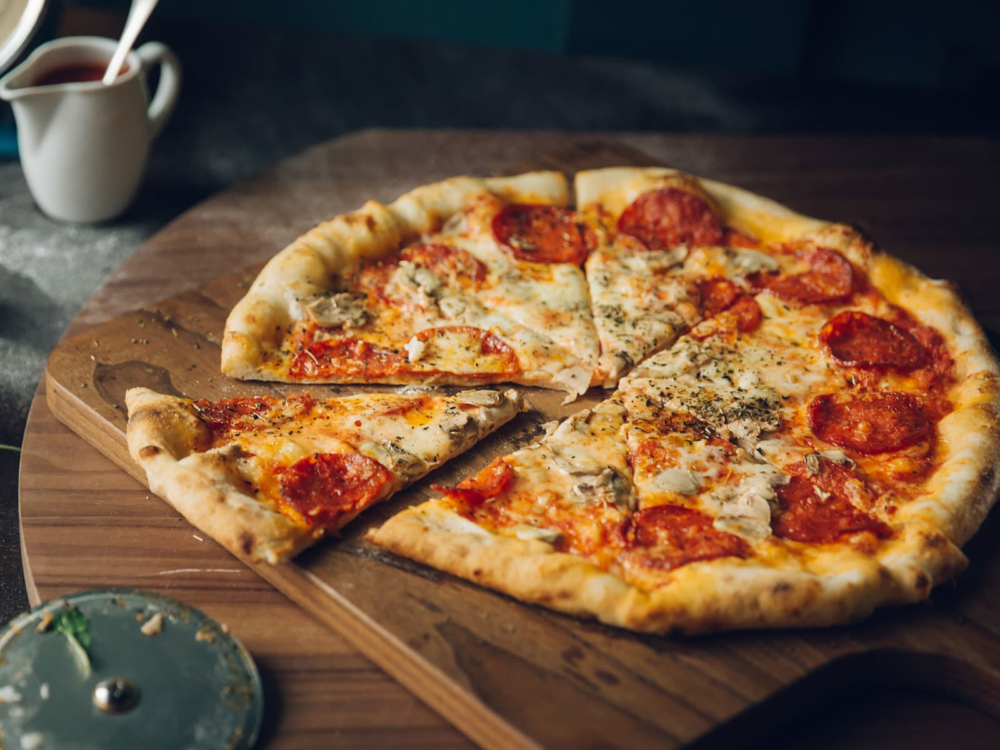

Fredagspizza

Description
This is my wife's favourite meal :)
Ingredients
- Løk
- Sopp
- Pizzasaus
- Revet ost
- Pepperoni
- Pizzamel
- Olje
- Salt
- Gjær
Steps
- Bland gjær, olje, salt og pizzamel til en deig som må heve i 30 min
- Kutt løk og sopp i mindre biter
- Riv osten
- Kjevle ut deigen når den har hevet i 30 min
- Fordel tomatsausen utover den flatkjevlede deigen
- Fordel osten utover deigen
- Fordel løk, sopp og pepperoni utover deigen
- Stek pizzaen i ovenen på 250 grader i 10-15 minutter